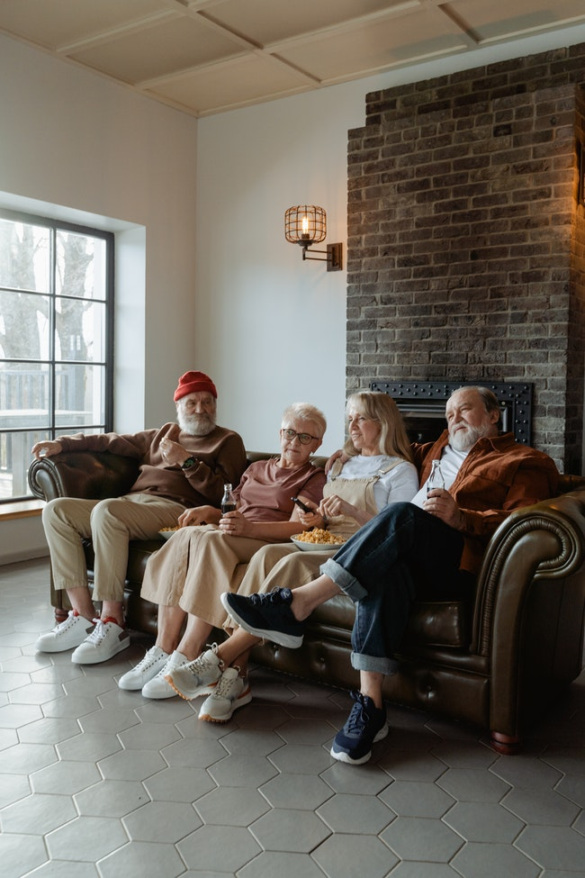

Unfortunately, there may come a time when you are faced with the tough decision of where whether or not to move your loved one into a nursing home. If they have a health condition that requires daily medical care, a skilled nursing facility might be the best option.
Uprooting a loved one from the familiarity and comfort of the only home they have known for years can cause depression. Aside from being a huge change, many seniors fear moving into a nursing home because they see it as a final step before the end of their life. This is usually true, since they typically do not return to their own home. Living in a nursing home can lead to feelings of loneliness and isolation, a primary cause of poor health among older adults.
We’ve all heard horror stories of poor treatment and neglect of nursing home residents. And, in fact, some reports show up to 90 percent of nursing homes are understaffed, which can cause poor supervision and increase the risk of accidents. However, most reputable nursing homes provide superior services and thoughtful care.
Depending on where you live, there might not be a quality nursing home facility located close by. A long drive to visit on the weekends can take a toll on family members over time. Even if you are able to visit regularly, your loved one may still feel a lack of family presence, increasing feelings of loneliness and depression. Most nursing home staff do their best to build a sense of community among residents, but for seniors they’re still not family.
Banglades
India
Pakistan
Cat
Bird
Butterfly
Alex
It is a white cat
Mini
It is a gray cat
Player Name
Total Runs
Mushfique
130
Shakib
90
Crist Gail
80
Older adults are accustomed to their own routines and it can be hard for them to adjust to a new schedule in a nursing home. For example, they can no longer choose what they want to eat when they are hungry. Instead, they are served a set menu at specific times throughout the day. While a nursing home schedule might be beneficial to your loved one’s overall health, the less loss of freedom and independence can cause them to lose self-esteem as they are no longer in control of their own life.
h2OWWF1

WHO
Visit us at
Old Home
Dhaka Miscellaneous Of Accommodation
Address: Dhaka Old Home Visit priyojon care.com!
E-10, Probin Bhaban and Hospital, Agargaon, Sher-e- Banglanagar, Dhaka-
Ph: 9129814.
Old people need your care and love
Older adults are accustomed to their own routines and it can be hard for them to adjust to a new schedule in a nursing home. For example, they can no longer choose what they want to eat when they are hungry. Instead, they are served a set menu at specific times throughout the day.